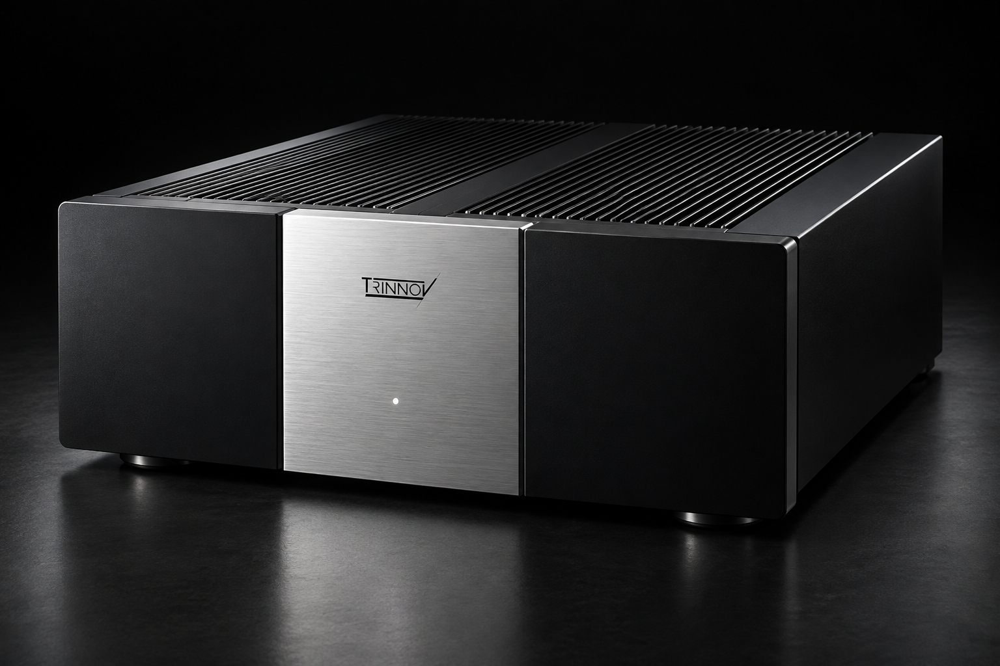

Mesurer
Le microphone 3D relève la distance, l’azimut, l’élévation et la réponse de chaque enceinte depuis la zone d’écoute.
L’EXCELLENCE ACOUSTIQUE, SANS COMPROMIS
Oubliez la technologie. Ressentez chaque émotion.
ALTITUDE32PROCESSEUR AUDIO IMMERSIF
PLUS QU’UN APPAREIL
Un système d’exception ne devrait pas imposer sa signature. Il devrait disparaître pour laisser la musique, le film et l’intention de l’artiste prendre toute leur place.
Trinnov conçoit en France des processeurs et des technologies d’optimisation acoustique capables de comprendre la géométrie réelle d’un espace d’écoute. La mesure, le calcul et la correction travaillent ensemble pour retrouver une scène sonore cohérente, jusque dans les installations les plus ambitieuses.
Le résultat ne se résume pas à davantage de puissance. Les voix gagnent en présence, les mouvements deviennent lisibles et le grave retrouve sa précision. Tout semble plus naturel, plus stable, plus évident.
Une réserve d’énergie qui respecte le moindre détail.
La série Amplitude accompagne les processeurs Altitude avec une amplification multicanale pensée comme un prolongement naturel du signal. Sa mission : alimenter chaque enceinte avec autorité, sans durcir les timbres ni réduire la dynamique.

Seize canaux d’amplification et une réserve généreuse pour conserver l’impact d’une bande-son, même lorsque toute la scène s’anime.
Une restitution stable à faible comme à fort niveau, afin que les micro-détails et les silences participent pleinement à l’émotion.
Une architecture conçue pour dialoguer avec les processeurs Altitude et s’intégrer aux systèmes résidentiels les plus exigeants.
Chaque espace possède une signature acoustique. Optimizer la mesure, l’analyse et l’harmonise.
À l’aide du microphone 3D, le système identifie la position réelle des enceintes et la réponse de la pièce. Il corrige ensuite les déséquilibres temporels, fréquentiels et spatiaux, tout en conservant le caractère de vos enceintes.
Cette approche née pour les studios professionnels transforme l’écoute domestique : dialogues mieux centrés, grave plus net, image sonore plus large et transitions parfaitement continues autour de l’auditeur.
Le microphone 3D relève la distance, l’azimut, l’élévation et la réponse de chaque enceinte depuis la zone d’écoute.
L’Optimizer construit une représentation précise du système et met en évidence les interactions entre les enceintes et la pièce.
La correction aligne le système avec finesse pour restituer une scène sonore fidèle, cohérente et profondément immersive.
L’Altitude32 repose sur une architecture logicielle et matérielle évolutive. Les nouvelles fonctions peuvent être intégrées au fil du temps sans remettre en cause le cœur du système.
Formats immersifs, nombre de canaux, connectique HDMI ou outils de calibration : le home cinéma évolue rapidement. La plateforme Altitude a été imaginée pour suivre ce mouvement. Son processeur multicœur et TrinnovOS permettent d’ajouter des fonctions et d’affiner les performances par mise à jour.
Cette philosophie prolonge la valeur du produit et simplifie la vie de l’installateur. La calibration peut être ajustée à distance, les configurations sont mémorisées et le système reste ouvert aux évolutions de la salle, des enceintes ou des usages.
Reproduction native des configurations Dolby Atmos les plus ambitieuses.
Une haute résolution spatiale pour conserver la précision des objets sonores.
La scène sonore s’adapte à la position réelle des enceintes dans la pièce.
Une plateforme logicielle dédiée, pensée pour progresser avec le système.
Les mêmes outils d’analyse et de traitement accompagnent les passionnés, les ingénieurs du son et les exploitants de salles. Chaque environnement impose ses contraintes ; la recherche de fidélité reste la même.
Créer une bulle immersive dans laquelle chaque effet trouve sa place et chaque dialogue reste parfaitement intelligible.
Découvrir ↗Respecter les timbres, la profondeur et l’équilibre d’un système stéréo d’exception, sans effacer sa personnalité.
Découvrir ↗Offrir aux studios une écoute de référence, stable et traduisible, pour prendre des décisions artistiques en confiance.
Découvrir ↗Calibrer de grandes salles avec précision afin que chaque spectateur reçoive une expérience cohérente et spectaculaire.
Découvrir ↗De la recherche fondamentale à l’assemblage final, chaque étape reflète une même ambition : rapprocher l’auditeur de l’intention originale.
Les équipes Trinnov réunissent acousticiens, ingénieurs du signal, développeurs et spécialistes de l’intégration. Cette proximité entre recherche et usage réel permet de transformer des idées complexes en outils précis, durables et accessibles aux professionnels.
Le support fait partie de cette conception. Installateurs et utilisateurs bénéficient d’un accompagnement capable de suivre le système dans le temps, depuis la première calibration jusqu’aux futures évolutions.
VOTRE PROCHAINE ÉMOTION
Une démonstration vaut mieux que toutes les spécifications. Rencontrez un spécialiste et découvrez ce que votre système peut réellement révéler.